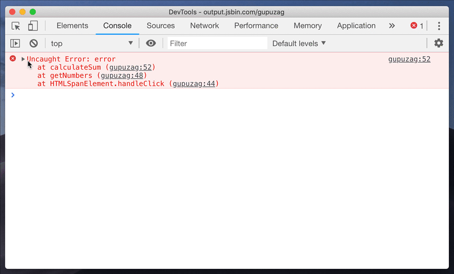

copy & saving
copy
使用copy()函数可以拷贝在console面板中的任何东西到剪切板。
Store as global
右击它，并且选择“Store as global variable” (保存为全局变量)这个选项。第一次使用的话，它会创建一个名为 temp1 的变量，然后是 temp2等等。
保存(Stack trace)堆栈跟踪
堆栈跟踪会很有用，对于你的同事来说也是这样。(例如 : 与其他的前端开发者合作，或者是QA (测试) 工程师)。所以你可以直接把堆栈跟踪保存为一个文件而不是截图。
